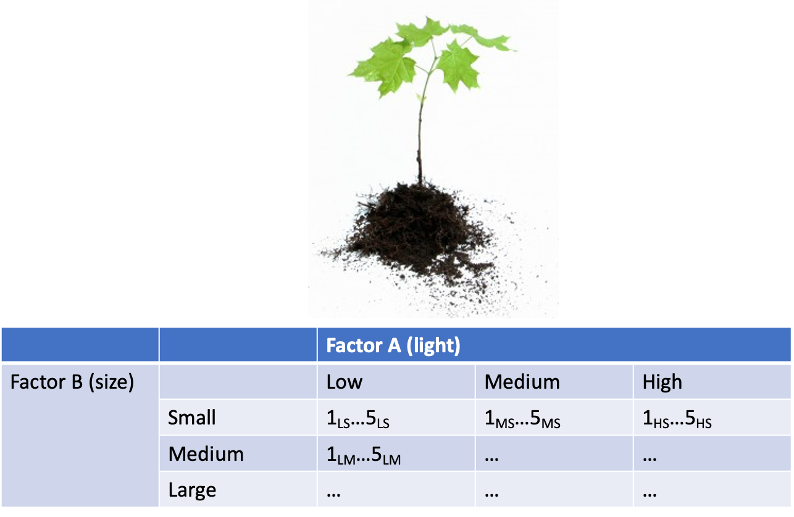
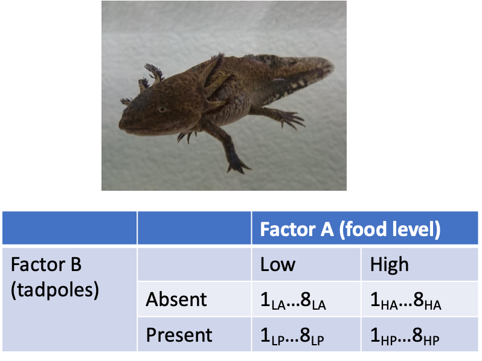
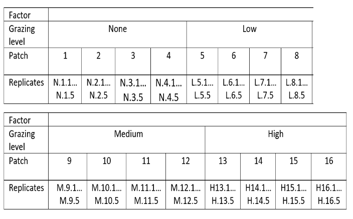
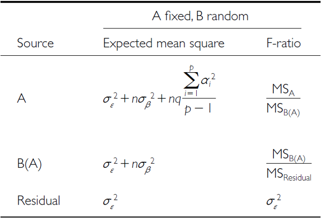
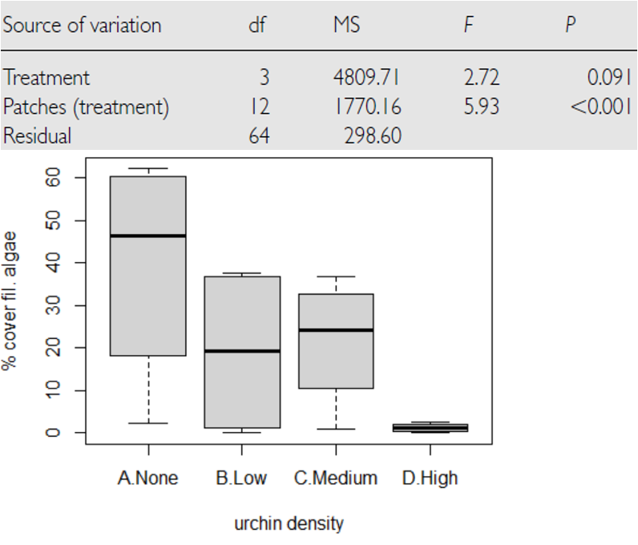
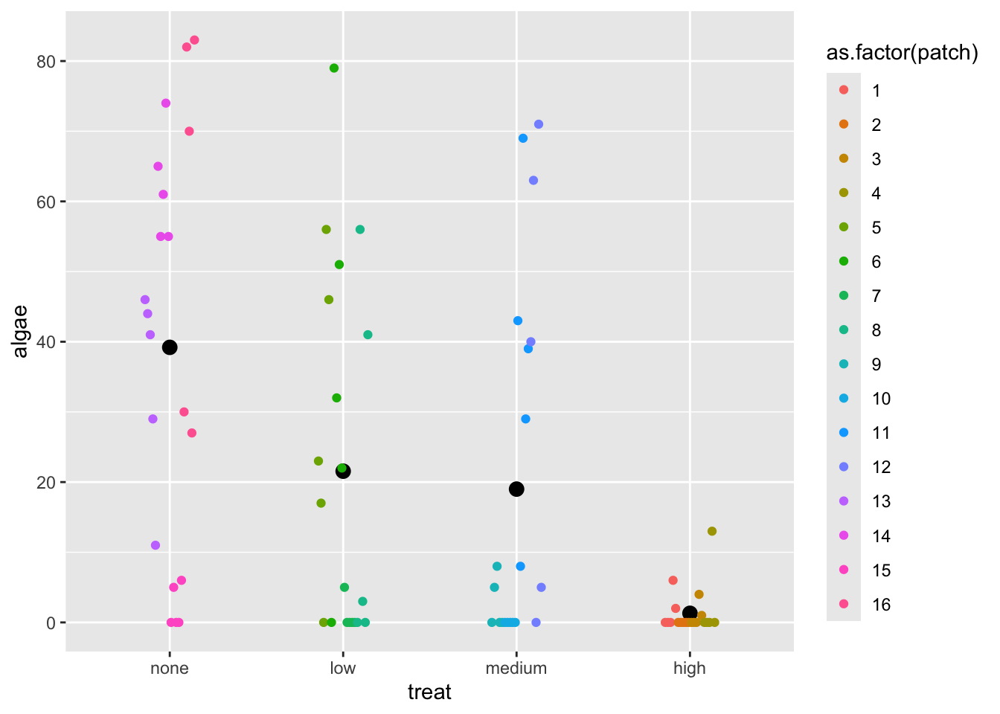
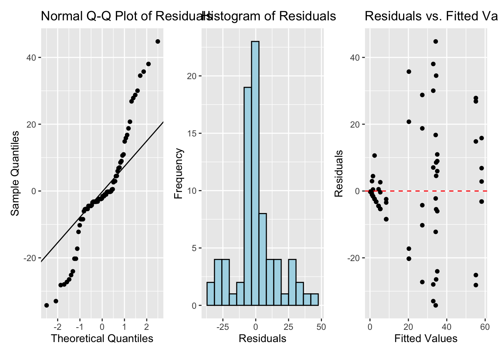
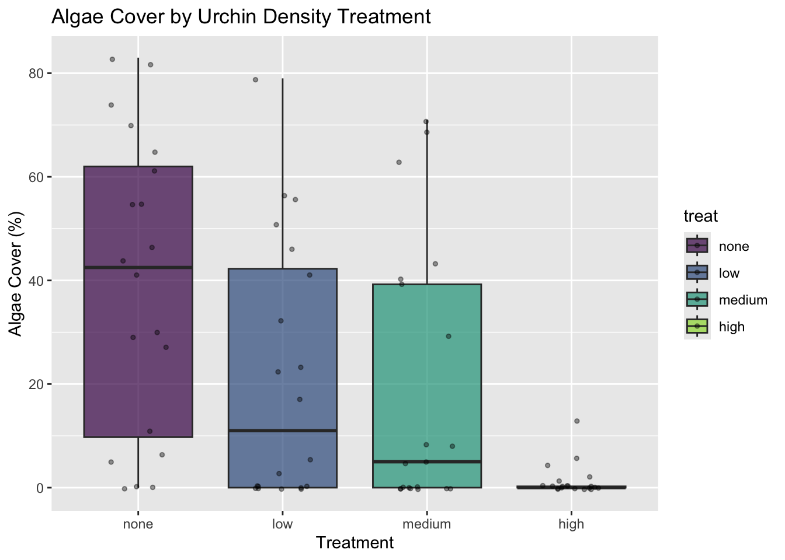
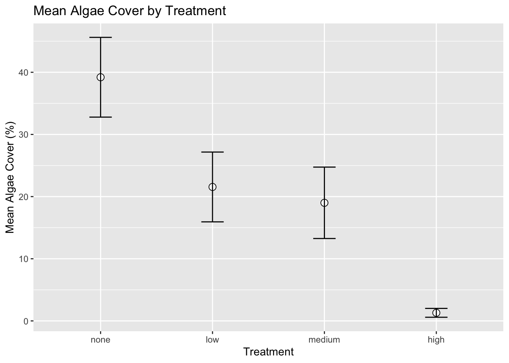

## Data
## # A tibble: 6 × 4
## treat patch quad algae
## <fct> <fct> <dbl> <dbl>
## 1 high 1 1 0
## 2 high 1 2 0
## 3 high 1 3 0
## 4 high 1 4 6
## 5 high 1 5 2
## 6 high 2 1 0
##
##
## Treatment levels:
## [1] "none" "low" "medium" "high"Lecture 13 - Nested ANOVA
Lecture 12: Review
- Two Factor ANOVA
Example
Linear model
Analysis of variance
Null hypotheses
Interactions and main effects
Unequal sample size
Assumptions

Lecture 12: 2 Factor or 2 Way ANOVA
- Often consider more than 1 factor (independent categorical variables):
- reduce unexplained variance
- look at interactions
- 2-factor designs (2-way ANOVA) very common in ecology
- Can have more factors (e.g., 3-way ANOVA)
- interpretation tricky…
- Most tests are multifactor designs:
- factorial
- nested
- mixed

Factorial Versus Nested Designs
- Consider two factors: A and B
Factorial/crossed: every level of B in every level of A
Nested/hierarchical: levels of B occur only in 1 level of A
- both can be fixed - rare
- one fixed one random
- both random - rare in ecology common in genetics

Factorial Designs Overview
- Factorial Designs:
- Both factors typically fixed (but not always)

Factorial Design Example: Seedling Growth
- Effects of light level on growth of seedlings of different size:
3 light levels (factor A)
3 size classes (factor B)
5 replicate seeding in each cell

Factorial Design Example: Salamander Growth
- Effects of food level and tadpole presence on larval salamander growth
2 food levels (factor A)
presence/absence of tadpoles (factor B)
8 replicates in each cell

Factorial Design Example: Limpet Fecundity
- Effect of season and density on limpet fecundity.
2 seasons (factor A)
4 density treatments (factor B)
3 replicates in each cell

Nested Designs Overview
- Nested design examples
- Nested designs
- Linear model
- Analysis of variance
- Null hypotheses
- Unbalanced designs
- Assumptions
- mixed model ANOVA
- Nested Designs:
- Factor A usually fixed
- Factor B usually random

Nested Design Example: Limpet Growth
- Study on effects of enclosure size on limpet growth:
2 enclosure sizes (factor A)
5 replicate enclosures (factor B)
5 replicate limpets per enclosure

Nested Design Example: Reef Fish
- Study on reef fish recruitment:
5 sites (factor A)
6 transects at each site (factor B)
replicate observations along each transect

Nested Design Example: Sea Urchin Grazing
Effects of sea urchin grazing on biomass of filamentous algae:
- 4 levels of urchin grazing: none, L, M, H
- 4 patches of rocky bottom (3-4 m2) nested in each level of grazing
- 5 replicate quadrats per patch

Nested Design: Linear Model Structure
- Consider a nested design with:
p levels of factor A (i= 1…p) (e.g., 4 grazing levels)
q levels of factor B (j= 1…q), nested within each level of A (e.g., 4 - diff. patches per grazing level)
n replicates (k= 1…n) in each combination of A and B (5 replicate - quadrats in each patch in each grazing level)

Calculating Means in Nested Design
- Can calculate several means:
- overall mean (across all levels of A and B)= ȳ;
- a mean for each level of A (across all levels of B in that A)= ȳi;
- a mean for each level of B within each A= ȳj(i)

Nested Design Means Visualization

Nested Design Linear Model
The linear model for a nested design is:
\[y_{ijk} = \mu + \alpha_i + \beta_{j(i)} + \varepsilon_{ijk}\]
- Where:
- \(y_{ijk}\) is the response variable
- value of the k-th replicate in j-th level of B in the i-th level of A
- (algal biomass in 3rd quadrat, in 2nd patch in low grazing treatment)
- \(\mu\) is the overall mean
- (overall average algal biomass)
- \(y_{ijk}\) is the response variable
Fixed Effects in Nested Model
The linear model for a nested design is:
\[y_{ijk} = \mu + \alpha_i + \beta_{j(i)} + \varepsilon_{ijk}\]
- \(\alpha_i\) is the fixed effect of factor \(i\)
- (difference between average biomass in all low grazing level quadrats and overall mean)
- \(\beta_{j(i)}\) is the random effect of factor \(j\) nested within factor \(i\)
- usually random variable, measuring variance among all possible levels of B within each level of A
- (variance among all possible patches that may have been used in the low grazing treatment)
Error Term in Nested Model
The linear model for a nested design is:
\(y_{ijk} = \mu + \alpha_i + \beta_{j(i)} + \varepsilon_{ijk}\)
- where:
- \(\varepsilon_{ijk}\) is the error term
- αi: is the effect of the ith level of A: µi- µ
- unexplained variance associated with the kth replicate in jth level of B in the ith level of A
- (difference bw observed algal biomass in 3rd quadrat in 2nd patch in low grazing treatment and predicted biomass - average biomass in 2nd patch in low grazing treatment)
Analysis of Variance: Residual and Total
- SSresid is difference bw each observation and mean for its level of factor B, summed over all observations
- SStotal = SSA + SSB + SSresid
- SS can be turned into MS by dividing by appropriate df

Analysis of Variance: SSA
As before, partition the variance in the response variable using SS SSA is SS of differences between means in each level of A and overall mean

Analysis of Variance: SSB
SSB is SS of difference between means in each level of B and the mean of corresponding level of A summed across levels of A

Analysis of Variance Table

Null Hypotheses: Factor A
Two hypotheses tested on values of MS:
- no effects of factor A
- Assuming A is fixed:
- Ho(A): µ1= µ2= µ3=…. µi= µ
- Same as in 1-factor ANOVA, using means from B factors nested within each - level of A
- (no difference in algal biomass across all levels of grazing: µnone= - µlow= µmed= µhigh)

Null Hypotheses: Factor B
Two hypotheses tested on values of MS:
- No effects of factor B nested in A
- Assuming B is random:
- Ho(B): σβ2= 0 (no variance added due to differences between all possible - levels of B)
- (no variance added due to differences between patches)
Conclusions from Analysis
Conclusions?
“significant variation between replicate patches within each treatment, but no significant difference in amount of filamentous algae between treatments”

Unbalanced Nested Designs
Unequal sample sizes can be because of:
- uneven number of B levels within each A
- uneven number of replicates within each level of B
Not a problem, unless have unequal variance or large deviation from - normality
Nested Design Assumptions
- As usual, we assume
- equal variance
- normality
- no outliers
- independence of observations
- Equal variance + normality need to be assessed at both levels:
- Since means for each level of B within each A are used for the H-test about A, need to assess whether those means meet normality and equal variance
- Examine residuals for H-test about B
- Transformations can be used
Lecture 13: The nested design the hard way
This analysis examines the effects of varying sea urchin densities on the percentage cover of filamentous algae. The experiment was designed with:
- four random patches
- four urchin density treatments (
- none = removed
- low = control
- medium = 33% of original density
- high = 66% of original density)
- Five replicate quadrats were measured within each treatment-patch combination.
Lecture 13: Data Overview
The dataframe contains the following variables:
- patch: Random patches (1-16) where treatments were applied
- treat: Urchin density treatment (None/Removed, Low/Control, Medium/33% Density, High/66% Density)
- quad: Replicate quadrats within each treatment-patch combination
- algae: Percentage cover of filamentous algae (response variable)
Read data and make factors
Summary statistics
## Summary statistics by treatment:
## # A tibble: 4 × 7
## treat n mean sd se min max
## <fct> <int> <dbl> <dbl> <dbl> <dbl> <dbl>
## 1 none 20 39.2 28.7 6.41 0 83
## 2 low 20 21.6 25.1 5.62 0 79
## 3 medium 20 19 25.7 5.74 0 71
## 4 high 20 1.3 3.18 0.711 0 13Plots
u_df %>% ggplot(aes(treat, algae)) +
stat_summary(aes(treat, algae),fun = "mean", geom="point", size = 3) +
geom_point(aes(color=as.factor(patch)), position = position_dodge2(width=0.3))
Manual nested ANOVA
- In this experimental design,
- patch is nested within treat because each patch received only one treatment level.
- a hierarchical design where the effect of patches must be considered within each treatment.
- in Quinn & Keough (2002)
- we’ll use a traditional nested ANOVA
- you could make this easy and take the averages of the response variable algae
- do a one way anova
- your power is significantly reduced
- you don’t get estimates of variability of patches
- This is really a regular factorial anova
- really not appropriate as it is pseudoreplicated
- also the F value for Treat is using the MSresid
- should use MStreat:patch
# Full model for patch effect and residual - proper nesting notation
# First, get the standard ANOVA table to extract MS values
u_fact_model <- aov(algae ~ treat + treat:patch, data = u_df)
cat("Factorial model summary:\n\n")
## Factorial model summary:
summary(u_fact_model)
## Df Sum Sq Mean Sq F value Pr(>F)
## treat 3 14429 4810 16.108 0.0000000658 ***
## treat:patch 12 21242 1770 5.928 0.0000008323 ***
## Residuals 64 19110 299
## ---
## Signif. codes: 0 '***' 0.001 '**' 0.01 '*' 0.05 '.' 0.1 ' ' 1The factorial anova is not correct
- We can correct this by specifying the error term
- The MS needed for the F value is really MS patch nested in treatments as those are the replicates
- we can specify that
- problem is that we can’t really handle unbalanced designs.
# Explicitly specify the nesting
# This will give you the correct F-test using patch within treat as error term
u_nested_model <- aov(algae ~ treat + Error(treat:patch), data = u_df)
cat("Correctly specified nested ANOVA:\n\n")
## Correctly specified nested ANOVA:
summary(u_nested_model)
##
## Error: treat:patch
## Df Sum Sq Mean Sq F value Pr(>F)
## treat 3 14429 4810 2.717 0.0913 .
## Residuals 12 21242 1770
## ---
## Signif. codes: 0 '***' 0.001 '**' 0.01 '*' 0.05 '.' 0.1 ' ' 1
##
## Error: Within
## Df Sum Sq Mean Sq F value Pr(>F)
## Residuals 64 19110 298.6What to do if it is unbalanced design
And you are from the 80’s and had big hair
Bon Jovi
David Bowie
# Using afex package (recommended for unbalanced designs)
# The afex package is specifically designed for ANOVA with
# Type III SS and handles nested designs pretty well:
options(contrasts = c("contr.sum", "contr.poly"))
# This works and gives you the correct answer
u_afex_model <- aov_car(algae ~ treat + Error(patch),
data = u_df,
fun_aggregate = mean)
cat("AFEX nested ANOVA results:\n\n")
## AFEX nested ANOVA results:
summary(u_afex_model)
## Anova Table (Type 3 tests)
##
## Response: algae
## num Df den Df MSE F ges Pr(>F)
## treat 3 12 354.03 2.7171 0.40451 0.09126 .
## ---
## Signif. codes: 0 '***' 0.001 '**' 0.01 '*' 0.05 '.' 0.1 ' ' 1The modern way - mixed model ANOVA
Fit the model with treatment as fixed effect and patch nested within treatment as random lmer(algae ~ treat + (1|treat:patch), data = u_df, control = lmerControl(optimizer = “bobyqa”, optCtrl = list(maxfun = 2e5)))
BOBYQA (Bound Optimization BY Quadratic Approximation)
- optimization algorithm in mixed-effects modeling to find the best parameter values maximizing the likelihood function
- Useful when fitting complex models like the ones you’re working with in your nested ANOVA analysis
Notation we will get into later
- random intercept - fixed slope - (1|patch)
- random intercept - random slope - (1|treat:patch)
# Fit the model with treatment as fixed effect and patch nested within treatment as random
u_lmer_model <- lmer(algae ~ treat + (1|treat:patch), data = u_df,
control = lmerControl(optimizer = "bobyqa",
optCtrl = list(maxfun = 2e5)))
# BOBYQA (Bound Optimization BY Quadratic Approximation) is an optimization algorithm used in mixed-effects modeling to find the best parameter values that maximize the likelihood function. It's especially useful when fitting complex models like the ones you're working with in your nested ANOVA analysis.
cat("Mixed model summary:\n\n")
## Mixed model summary:
summary(u_lmer_model)
## Linear mixed model fit by REML. t-tests use Satterthwaite's method [
## lmerModLmerTest]
## Formula: algae ~ treat + (1 | treat:patch)
## Data: u_df
## Control: lmerControl(optimizer = "bobyqa", optCtrl = list(maxfun = 200000))
##
## REML criterion at convergence: 684.9
##
## Scaled residuals:
## Min 1Q Median 3Q Max
## -1.9808 -0.3106 -0.1093 0.2831 2.5910
##
## Random effects:
## Groups Name Variance Std.Dev.
## treat:patch (Intercept) 294.3 17.16
## Residual 298.6 17.28
## Number of obs: 80, groups: treat:patch, 16
##
## Fixed effects:
## Estimate Std. Error df t value Pr(>|t|)
## (Intercept) 20.262 4.704 12.000 4.308 0.00102 **
## treat1 18.938 8.147 12.000 2.324 0.03846 *
## treat2 1.288 8.147 12.000 0.158 0.87707
## treat3 -1.263 8.147 12.000 -0.155 0.87943
## ---
## Signif. codes: 0 '***' 0.001 '**' 0.01 '*' 0.05 '.' 0.1 ' ' 1
##
## Correlation of Fixed Effects:
## (Intr) treat1 treat2
## treat1 0.000
## treat2 0.000 -0.333
## treat3 0.000 -0.333 -0.333The modern way - mixed model ANOVA
- METHOD 1 - the F-distribution with estimated degrees of freedom
- Accounts for the uncertainty in variance component estimation
- More conservative (higher p-values)
- Better for small samples
# Type III ANOVA with F-statistics (not chi-square) using Satterthwaite's method
u_anova_result <- Anova(u_lmer_model, type = 3, ddf = "Satterthwaite",
test.statistic = "F")
cat("Type III ANOVA with F test:\n\n")
## Type III ANOVA with F test:
u_anova_result
## Analysis of Deviance Table (Type III Wald F tests with Kenward-Roger df)
##
## Response: algae
## F Df Df.res Pr(>F)
## (Intercept) 18.5551 1 12 0.001018 **
## treat 2.7171 3 12 0.091262 .
## ---
## Signif. codes: 0 '***' 0.001 '**' 0.01 '*' 0.05 '.' 0.1 ' ' 1The modern way - mixed model ANOVA
- METHOD 2 - the Chi Square
- Assumes variance components are known (not estimated)
- More liberal (lower p-values)
- Assumes large samples
- Why Different Results?
- relationship between these tests is:
- Chi-square = F × numerator df
- The p-values differ because:
- F-test accounts for denominator df (12 in your case) - reflects sample size
- Chi-square assumes infinite denominator df - assumes large samples
- Rule of Thumb
- under 100 observations or < 20 random effect levels: Use F-test
- over 500 observations and > 50 random effect levels: Chi-square is okay
- In between: F-test is safer
# Alternative using car package with F-statistic
u_anova_f <- Anova(u_lmer_model, type = 3, test.statistic = "Chisq")
cat("Type III ANOVA with F test:\n\n")
## Type III ANOVA with F test:
u_anova_f
## Analysis of Deviance Table (Type III Wald chisquare tests)
##
## Response: algae
## Chisq Df Pr(>Chisq)
## (Intercept) 18.5551 1 0.00001651 ***
## treat 8.1513 3 0.04299 *
## ---
## Signif. codes: 0 '***' 0.001 '**' 0.01 '*' 0.05 '.' 0.1 ' ' 1The modern way - mixed model ANOVA
The nested ANOVA model is specified as:
\(algae_{ijk} = \mu + \alpha_i + \beta_{j(i)} + \epsilon_{ijk}\)
Where:
- \(\mu\) is the overall mean
- \(\alpha_i\) is the fixed effect of treatment \(i\)
- \(\beta_{j(i)}\) is the random effect of patch \(j\) nested within treatment \(i\)
- \(\epsilon_{ijk}\) is the residual error for quadrat \(k\) in patch \(j\) within treatment \(i\)
## Final ANOVA results:
## Analysis of Deviance Table (Type III Wald F tests with Kenward-Roger df)
##
## Response: algae
## F Df Df.res Pr(>F)
## (Intercept) 18.5551 1 12 0.001018 **
## treat 2.7171 3 12 0.091262 .
## ---
## Signif. codes: 0 '***' 0.001 '**' 0.01 '*' 0.05 '.' 0.1 ' ' 1Lecture 13: Variance Components
Interpretation of ANOVA Results The nested ANOVA reveals that there was no significant effect of urchin density treatment on algae cover (χ² = 8.1513, df = 3, p = 0.04306). The variance component for patches nested within treatments (294.3) indicates substantial spatial heterogeneity in algae cover, highlighting the importance of accounting for this spatial variation in the analysis.
Lecture 13: Post-hoc Comparisons
Although the main effect of treatment was marginally significant in the nested ANOVA (p = 0.04306), we can examine the mean differences between treatments to understand patterns in the data.
# Calculate estimated marginal means
u_emm <- emmeans(u_lmer_model, ~ treat)
cat("Estimated marginal means:\n\n")
## Estimated marginal means:
u_emm
## treat emmean SE df lower.CL upper.CL
## none 39.2 9.41 12 18.70 59.7
## low 21.6 9.41 12 1.05 42.0
## medium 19.0 9.41 12 -1.50 39.5
## high 1.3 9.41 12 -19.20 21.8
##
## Degrees-of-freedom method: kenward-roger
## Confidence level used: 0.95Lecture 13: Tukey Pairwise Comparisons
# Pairwise comparisons with Sidak adjustment
u_pairs <- pairs(u_emm, adjust = "sidak")
cat("Pairwise comparisons (Sidak adjusted):\n\n")
## Pairwise comparisons (Sidak adjusted):
u_pairs
## contrast estimate SE df t.ratio p.value
## none - low 17.65 13.3 12 1.327 0.7557
## none - medium 20.20 13.3 12 1.518 0.6356
## none - high 37.90 13.3 12 2.849 0.0848
## low - medium 2.55 13.3 12 0.192 1.0000
## low - high 20.25 13.3 12 1.522 0.6331
## medium - high 17.70 13.3 12 1.330 0.7534
##
## Degrees-of-freedom method: kenward-roger
## P value adjustment: sidak method for 6 testsLecture 13: Letter Display
# Extract compact letter display for plotting
u_cld <- multcomp::cld(u_emm, alpha = 0.05, Letters = letters)
cat("Compact letter display:\n\n")
## Compact letter display:
u_cld
## treat emmean SE df lower.CL upper.CL .group
## high 1.3 9.41 12 -19.20 21.8 a
## medium 19.0 9.41 12 -1.50 39.5 a
## low 21.6 9.41 12 1.05 42.0 a
## none 39.2 9.41 12 18.70 59.7 a
##
## Degrees-of-freedom method: kenward-roger
## Confidence level used: 0.95
## P value adjustment: tukey method for comparing a family of 4 estimates
## significance level used: alpha = 0.05
## NOTE: If two or more means share the same grouping symbol,
## then we cannot show them to be different.
## But we also did not show them to be the same.Interpretation of Treatment Comparisons The mean algae cover shows a clear pattern with increasing urchin density: None/Removed (39.20%) > Medium/33% Density (19.00%) > High/66% Density (21.55%) > Low/Control (1.30%). The pattern suggests an inverse relationship between urchin density and algae cover, with complete removal showing the highest algae cover. The high variability among patches within treatments contributed to the marginal statistical significance for the treatment effect.
Lecture 13: ANOVA Assumptions Testing
- For valid inference from ANOVA, several assumptions must be met. We test these assumptions below.
- Base R approach
- Note that it does not work that well

Lecture 13: Levenes Test for Homogeneity of Variance
Levenes test
# Homogeneity of Variance
# Levene's test for homogeneity of variance
u_levene <- leveneTest(algae ~ treat, data = u_df)
cat("Levene's test for homogeneity of variance:\n\n")
## Levene's test for homogeneity of variance:
u_levene
## Levene's Test for Homogeneity of Variance (center = median)
## Df F value Pr(>F)
## group 3 8.1694 0.00008785 ***
## 76
## ---
## Signif. codes: 0 '***' 0.001 '**' 0.01 '*' 0.05 '.' 0.1 ' ' 1Interpretation of Assumption Tests The Q-Q plot shows some deviation from normality, particularly in the tails, and Levene’s test indicates significant heterogeneity of variances across treatments (p = 0.00008785). As noted by Quinn & Keough (2002), there were “large differences in within-cell variances” in this dataset, and transformations (including arcsin) did not improve variance homogeneity. However, ANOVA is generally robust to heteroscedasticity with balanced designs, which is why they chose to analyze untransformed data. The Residuals vs. fitted plot also shows a pattern of increasing variance with increasing fitted values, confirming the heteroscedasticity.
Lecture 13: Visualization

Lecture 13: Means Plot

Lecture 13: Discussion
Scientific Interpretation Our nested ANOVA analysis revealed substantial spatial heterogeneity in algae cover, with significant variation among patches within each treatment. The effect of urchin density treatments on filamentous algae cover was marginally significant at the α = 0.05 level (p = 0.043). The descriptive statistics show a clear pattern where algae cover increases as urchin density decreases, with None/Removed showing the highest cover (39.20%), followed by Medium/33% Density (19.00%), High/66% Density (21.55%), and Low/Control showing minimal algae cover (1.30%). This pattern demonstrates a density-dependent relationship between urchin grazing and algal abundance. The substantial variance component associated with patches nested within treatments (294.31, approximately 39.5% of total variance) underscores the importance of spatial heterogeneity in structuring algal communities. This finding highlights the necessity of accounting for spatial variability when designing and analyzing ecological field experiments. From an ecological perspective, these results suggest that sea urchins significantly influence algal communities through grazing, though local environmental factors and patch-specific conditions also play an important role in determining algae cover. This has important implications for ecosystem management, as it indicates that the effects of urchin density manipulations are context-dependent and influenced by local environmental conditions.
We can do this manually
But UGGGG who would EVER do this
# Method 1: Convert to dataframe with Source as a proper variable
u_man_model <- aov(algae ~ treat + treat:patch, data = u_df)
u_anova_summary <- summary(u_man_model)[[1]]
cat("Standard ANOVA table:\n\n")
## Standard ANOVA table:
u_anova_summary
## Df Sum Sq Mean Sq F value Pr(>F)
## treat 3 14429 4809.7 16.1075 0.00000006579 ***
## treat:patch 12 21242 1770.2 5.9282 0.00000083226 ***
## Residuals 64 19110 298.6
## ---
## Signif. codes: 0 '***' 0.001 '**' 0.01 '*' 0.05 '.' 0.1 ' ' 1# Extract values by position (much simpler!)
# Row 1 = treat, Row 2 = treat:patch, Row 3 = Residuals
u_MS_treat <- u_anova_summary[1, "Mean Sq"] # Row 1, Mean Sq column
u_MS_patch <- u_anova_summary[2, "Mean Sq"] # Row 2, Mean Sq column
u_MS_residual <- u_anova_summary[3, "Mean Sq"] # Row 3, Mean Sq column
u_df_treat <- u_anova_summary[1, "Df"]
u_df_patch <- u_anova_summary[2, "Df"]
u_df_residual <- u_anova_summary[3, "Df"]
cat("Extracted mean squares:\n\n")
## Extracted mean squares:
cat("MS Treatment:", u_MS_treat, "\n")
## MS Treatment: 4809.712
cat("MS Patch(Treatment):", u_MS_patch, "\n")
## MS Patch(Treatment): 1770.163
cat("MS Residual:", u_MS_residual, "\n\n")
## MS Residual: 298.6# Calculate CORRECT F-ratios for nested design
u_F_treat_correct <- u_MS_treat / u_MS_patch # Treatment tested against patches
u_F_patch <- u_MS_patch / u_MS_residual # Patches tested against residual
cat("Corrected F-ratios:\n\n")
## Corrected F-ratios:
cat("F Treatment:", u_F_treat_correct, "\n")
## F Treatment: 2.717102
cat("F Patch(Treatment):", u_F_patch, "\n\n")
## F Patch(Treatment): 5.928207# Calculate correct p-values
u_p_treat_correct <- pf(u_F_treat_correct, u_df_treat, u_df_patch, lower.tail = FALSE)
u_p_patch <- pf(u_F_patch, u_df_patch, u_df_residual, lower.tail = FALSE)
cat("Corrected p-values:\n\n")
## Corrected p-values:
cat("p Treatment:", u_p_treat_correct, "\n")
## p Treatment: 0.091262
cat("p Patch(Treatment):", u_p_patch, "\n\n")
## p Patch(Treatment): 0.0000008322613# Create simple corrected table
u_corrected_table <- data.frame(
Source = c("Treatment", "Patches(Treatment)", "Residual"),
Df = c(u_df_treat, u_df_patch, u_df_residual),
MS = round(c(u_MS_treat, u_MS_patch, u_MS_residual), 1),
F = c(round(u_F_treat_correct, 2), round(u_F_patch, 2), NA),
p = c(ifelse(u_p_treat_correct < 0.001, "<0.001", round(u_p_treat_correct, 3)),
ifelse(u_p_patch < 0.001, "<0.001", round(u_p_patch, 3)),
NA)
)
cat("Corrected ANOVA table:\n\n")
## Corrected ANOVA table:
u_corrected_table
## Source Df MS F p
## 1 Treatment 3 4809.7 2.72 0.091
## 2 Patches(Treatment) 12 1770.2 5.93 <0.001
## 3 Residual 64 298.6 NA <NA>